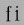
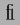

Advanced Typography Tables¶
These differ between OpenType (originally called TrueType Open) and Apple (GX or Apple Advanced Typography). My support for both OpenType and Apple is incomplete.
The GPOS, GSUB, GDEF and BASE OpenType tables¶
The first two tables are used for positioning and substituting glyphs. The GPOS table can control things like: kerning, accent positioning, cursive joining, etc. The GSUB table can control things like: ligatures, arabic forms, vertical rotation, conversion to small caps, indic glyph rearrangement, etc. GDEF contains some rather esoteric glyph information, ligature carets, etc. BASE contains information on baseline placement and line heights.
This page assumes basic familiarity with the abilities of the tables, for more information on them read, study and inwardly digest the OpenType docs on:
The GPOS table, for positioning glyphs
The GSUB table, for substituting glyphs
The GDEF table, for classifying glyphs and for providing a ligature caret table
The BASE table, for baseline placement
The basic idea of the GPOS and GSUB tables is that each script (or language within a script) has a set of “features” that are available to it. A feature in turn is associated with a lookup which contains data for the feature. An example of a script is ‘latn’ for latin, ‘arab’ for arabic, ‘hani’ for chinese ideographs. Two examples of features are ‘kern’ which provides kerning information between pairs of glyphs and ‘init’ which will transform one set of glyphs to another when those glyphs are at the beginning of a word.
FontForge does not support the full range of possibilities inherent in these tables.
The GPOS table¶
FontForge will read the following sub tables of the GPOS table:
-
single adjustment -
Reading support This sub-table allows the font designer to change the metrics of a specific glyph. The feature tag will provide a context in which the change should occur. For instance the ‘tnum’ (tabular numbers) feature could change a proportionally spaced digit by adjusting its advance width to be some set value and then centering the digit (by adjusting the left side bearing) within the new width.
-
Writing support These can be created with the Element->Char Info->Position command.
-
-
pair adjustment -
Reading support This sub-table allows the font designer to change the metrics of a specific pair of glyph. The most common use of this is for kerning where the advance width of the first glyph is altered depending on which glyph follows it. But the table is more general than that and could support mark (accent, vowel) positioning over a base glyph (though that is more efficiently done with the mark to base subtable).
-
Writing support ‘kern’ feature s may be created from the Metrics View. ‘vkrn’ with Metrics->VKern From HKern.
-
-
cursive attachment -
Reading support This sub-table allows the font designer to force adjacent glyphs to join at specific points. It can be used to generate the slanted script style needed for Urdu.
-
Writing support Only the ‘curs’ feature is supported for this sub-table. These may be created with the Points->Add Anchor command
-
-
mark to base -
Reading support This sub-table allows the font designer to specify how mark glyphs (accents, vowel signs, etc.) are positioned over base glyphs. Every glyph can have an attachment point and the mark’s attachment point will be placed on the base’s attachment point so the two join properly. See my example in the overview.
-
Writing support These may be created with the Points->Add Anchor command
-
-
mark to ligature -
Reading support This sub-table is very similar to the previous one except that the base glyph is a ligature and may have several different points at which the same type of accent may be placed.
-
Writing support These may be created with the Points->Add Anchor command
-
-
mark to mark -
Reading support This sub-table is very similar to the previous two except that the base glyph is itself a mark. This may be used when a glyph has two accents each of which would normally be placed at the same attachment point on a base glyph. The second accent will be place relative to the first accent rather than to the base glyph.
-
Writing support These may be created with the Points->Add Anchor command
-
-
contextual positioning -
Reading support This sub-table allows the font designer to control the positioning of glyphs when they occur within a specific string (or class of strings). For instance this table could say “when you see a digit followed by the string “th” then raise the “th” into a superscript position”
-
Writing support These may be created with the Element->Font Info->Contextual command
-
-
chaining contextual positioning -
Reading support This is a slightly more complex version of the above, it doesn’t really add new capabilities, but it does provide a more logical approach to the issue.
-
Writing support These may be created with the Element->Font Info->Contextual command
-
-
extension positioning -
Reading support This is used to allow for a GPOS table which is bigger than 64k. Its use should be quite invisible to the font designer
-
Writing support FontForge uses this sub-table when needed.
-
-
reserved for future use -
Writing support FontForge does not support these sub-tables yet.
(nor does anyone)
-
FontForge also has built into it knowledge on how to provide default values for some features that use these tables.
FontForge will retain the order of features in the GPOS table and when a font is generated the order should be the same as it was before.
The GSUB table¶
FontForge will read the following sub tables of the GSUB table:
-
single substitution -
Reading support This sub-table allows the font designer to change from one glyph to another, with a context provided by the feature tag. For example many scripts have letters which have a different form at the end of a word than they do within (this is true of every letter in arabic, several in hebrew, lower case sigma in greek, and the long-s/short-s pair in renaissance latin). So the ‘fina’ feature would map the normal form into the final form, and the word processing program would do a lookup at the end of each word to see if a transformation was needed.
-
Writing support These can be created with the Element->Char Info->Substitution command.
-
-
multiple substitution -
Reading support This sub-table allows the font designer to replace one glyph by a series of others. This is generally used for rather technical layout issues.
-
Writing support These can be created with the Element->Char Info->Multiple Substitution command.
-
-
alternate substitution -
Reading support This sub-table allows the font designer to have a series of “alternates” for each glyph. One common example would be an italic font which had several swash variants for each capital letter. The word processing program would allow the user to choose which variant was appropriate
-
Writing support These can be created with the Element->Char Info->Alternate Substitution command.
-
-
ligature substitution -
Reading support This sub-table allows the font designer to replace a string of glyphs with another glyph. A common example is a ligature where the string  is replaced by the  ligature.
-
Writing support These can be created with the Element->Char Info->Ligature command.
-
-
contextual substitution -
Reading support This subtable allows for a string of glyphs to replace another string of glyphs (or class of strings of glyphs)
-
Writing support These may be created with the Element->Font Info->Contextual command
-
-
chaining contextual substitution -
Reading support This is a slightly more complex version of the above, it doesn’t really add new capabilities, but it does provide a more logical approach to the issue.
-
Writing support These may be created with the Element->Font Info->Contextual command
-
-
extension positioning -
Reading support This is used to allow for a GSUB table which is bigger than 64k. Its use should be quite invisible to the font designer
-
Writing support FontForge uses this sub-table when needed.
-
-
reverse chaining contextual single substitution -
Reading support This allows glyph substitutions to happen in reverse order, and it a variant of the chaining contextual subtable.
-
Writing support These may be created with the Element->Font Info->Contextual command
-
-
reserved for future use -
Writing support FontForge does not support these sub-tables yet.
(nor does anyone)
-
FontForge also has built into it knowledge on how to provide default values for some features that use these tables. See the [Populate] button of the various lookup subtable dialogs.
FontForge can produce some of these tables, but the text layout/word processing program used has to look up the tables and do the actual work of rearranging the glyphs.
FontForge will retain the order of features in the GSUB table, and the user may adjust it with the Element->Font Info command.
The GDEF table¶
FontForge will read ligature carets out of a GDEF table.
It will generate a GDEF table containing a glyph class definition sub-table (if needed) or a ligature caret sub-table (if needed).
Apple Advanced Typography¶
As above I do not go deeply into the abilities of these tables, for more information see Apple’s docs:
FontForge will currently read and produce (if Apple mode is set in font generation) the following tables:
Apple tables corresponding vaguely to BASE
-
baseline table -
Reading support FontForge will read baseline data (except for Apple’s ideographic centered baseline, for which there is no OpenType equivalent)
-
Writing support FontForge will produce this table if the user has specified baseline data which apple supports
-
Apple tables corresponding vaguely to GDEF
-
ligature caret table -
Reading support FontForge will read ligature carets
-
Writing support FontForge will produce this table if the user has specified ligature carets
-
-
glyph properties table -
Reading support FontForge will read this table to figure out which glyphs are hebrew and arabic, and which have ‘r2la’ substitutions.
-
Writing support FontForge will generate this table if the font contains some right to left glyphs.
-
Apple tables corresponding vaguely to GPOS
-
kerning table -
Reading support FontForge will read horizontal/vertical kerning pairs and classes. FontForge can read contextual kerning information too into a state machine.
-
Writing support FontForge will produce this if the font contains kerning data – kerning pairs, kerning by classes, and kerning by state machine.
-
-
Optical bounds table -
Reading support FontForge will read optical bounds
-
Writing support FontForge will produce this table if the user has specified right and left bounds as simple positions (‘lfbd’ and ‘rtbd’).
-
FontForge has support for the 'mort' and 'morx' tables (Glyph
metamorphosis and extended glyph metamorphosis tables). These correspond vaguely
to the GSUB table. Note: Any feature type/setting
combinations which correspond directly to an open type feature will be converted
to the OpenType tag when read in. It will be converted back to a feature/setting
when an apple font is generated (use File->Preferences to
extend FontForge’s mapping from feature type/setting to OpenType tags).
Sub tables of ‘mort’ or ‘morx’
-
Indic style rearrangement -
Reading support FontForge can read these and stores them as state machines (which can be edited with Font Info)
-
Writing support Any indic state machines will be output in the generated font.
-
-
contextual glyph substitution -
Reading support FontForge can read these and stores them as state machines (which can be edited with Font Info)
-
Writing support If the font contains any state machines they will be output here. If there are no state machines then the following conversions of OpenType features will be done:
FontForge will generate a cursive connection feature using this subtable type if the font contains ‘init’, ‘medi’, ‘fina’ or ‘isol’ simple substitutions.
In some cases FontForge is able to convert an OpenType Contextual/Chaining substitution table into an Apple contextual glyph substitution table.
-
-
ligature substitution -
Reading support FontForge can read the unconditional information from these and stores them as OpenType ligatures (which can be edited with Font Info or Char Info).
-
Writing support If there are any ligatures with an apple feature/setting (or which have an OpenType tag which can be converted to an apple feature/setting) then this table will be output.
-
-
non-contextual glyph substitution -
Reading support FontForge can read these and stores them as OpenType simple substitutions (which can be edited with Font Info or Char Info)
-
Writing support If there are any substitutions with an apple feature/setting (or which have an OpenType tag which can be converted to an apple feature/setting) then this table will be output.
-
-
contextual glyph insertion -
Reading support FontForge can read these and stores them as state machines (which can be edited with Font Info)
-
Writing support Any glyph insertion state machines will be output in the generated font.
-
What features can be interconverted between OpenType and AAT?¶
Some features have almost the same meaning in OpenType and AAT (although they are expressed quite differently), others are similar enough that they can sometimes be converted, and others have essentially no common ground.
-
GDEF -> lcar
The ligature caret information in both ‘GDEF’ and ‘lcar’ is essentially identical and FontForge has no trouble reading both and converting from one to the other.
-
BASE -> bsln
There is slightly different baseline data in the two formats. ‘bsln’ does not provide extent information. ‘bsln’ provides a baseline for every glyph, while ‘BASE’ provides a baseline for every script – one hopes all glyphs in a script will have the same baseline, but it isn’t guaranteed. Finally ‘bsln’ and ‘BASE’ provide a slightly different set of baseline tags, and FontForge only supports the OpenType ones. In particular Apple’s ideographic centered baseline will be lost.
-
GPOS -> kern
In most cases kerning information can be converted from one format to another. Both provide support for vertical kerning and right to left kerning. Both provide support for kerning by glyph pair and kerning by classes.
OpenType allows kerning commands to be supplied via a contextual chaining feature, Apple allows them to be controlled by a state machine. FontForge supports both, but does not interconvert.
-
GPOS -> opbd
The GPOS features ‘lfbd’ and ‘rtbd’ provide the information needed to generate an Apple opbd table. If FontForge reads a font with an opbd table it will generate appropriate ‘lfbd’ and ‘rtbd’ features. If FontForge generates a font in apple mode that has these features it will create an opbd table. Similarly when FontForge reads an opbd table it will create ‘lfbd’ and ‘rtbd’ features.
-
GPOS -> other
I am not aware of any way to convert other GPOS features to AAT.
-
GSUB -> morx / mort
The ‘mort’ and ‘morx’ tables have the same capabilities (‘mort’ tables are an old format and Apple currently encourages that ‘morx’ tables be used instead). FontForge can read either one, but only generates ‘morx’ tables. Interconversion depends on specific feature types and the sub-table formats, see below
An analysis of GSUB and morx sub-tables and feature tags¶
OpenType uses a four character feature tag (like ‘liga’) while Apple uses two numbers to represent a feature setting (<1,2>). For FontForge to be able to inter-convert an OpenType feature into an Apple feature there must first be a correspondence between the two naming conventions. Sometimes there is an easy direct conversion (above ‘liga’ and <1,2> both represent “Common Ligatures”) but far more often there is none. See below for a list of the tags and feature settings that FontForge considers similar enough to interconvert.
GSUB tables have 7 sub-table formats, while morx tables have 5.
-
Single -> Non-Contextual Glyph
These two sub-tables have almost exactly the same capabilities. Each allows one glyph to be substituted for another. The morx sub-table also allows a glyph to be deleted, while the GSUB sub-table does not.
-
Multiple -> N/A
This GSUB subtable allows a single glyph to be replaced by multiple glyphs. It has some similarities to Apple’s Glyph Insertion sub-table except:
the ‘morx’ sub-table always leaves the current glyph in the glyph stream, while this sub-table need not
the ‘morx’ sub-table is contextual while this sub-table is never. (But if this sub-table is wrapped inside a Context or Chaining Context subtable the result can be contextual).
-
N/A -> Glyph Insertion
This morx subtable allows a string of glyphs to be inserted before or after the current glyph (the current glyph always remains). This sub-table is contextual (ie. the insertion can be restricted to certain contexts). It bears some similarities to the GSUB Multiple subtable above.
-
Alternate -> N/A
This GSUB subtable allows a single glyph to be replaced by any one of several alternatives (presumably with help from a word processor’s UI). An example of this would be a character which had several swash variants. There is nothing like this in the ‘morx’ table.
Ligature -> Ligature
Both formats have ligature sub-tables. The ‘GSUB’ version is unconditional (the ligature is always applied – though a ligature substitution could be embedded in an OpenType contextual substitution to make it condtional). The ‘morx’ version can be contextual (though in fonts I have examined it is usually uncontextual). FontForge only supports unconditional ligatures.
FontForge can read all the unconditional ligatures from a ‘morx’ sub-table. FontForge loses all contextual ligatures.
In OpenType, contextual ligatures can be built by wrapping a ligature sub-table inside a Context or Chaining Context subtable.
-
N/A -> Contextual Glyph
This morx subtable allows single glyph substitutions to be applied within certain contexts. At first glance it seems that this could be converted into an OpenType Context subtable, but this is rarely the case.
-
Chaining / Chaining Context -> N/A
These GSUB subtables allow any collection of other substitutions to be applied contextually. At first glance one might think that these (with appropriate nested substitutions) might be converted to ‘morx’ contextual glyph substitutions, contextual ligatures, or even glyph insertion. Unfortunately this is rarely the case.
-
Reverse Chaining Context -> N/A
This GSUB subtable is applied backwards to the stream of glyphs, it allows a single glyph substitution per contextual match. There is nothing like it in ‘morx’.
-
N/A -> Indic Rearrangement
This ‘morx’ subtable allows for several glyphs to interchange their positions in the glyph stream. There is nothing like it in GSUB (or GPOS for that matter).
Why do contextual glyph substitutions only sometimes get generated in AAT?¶
Sadly OpenType and AAT provide disjoint capabilities when it comes to contextual matching. AAT is more capable in some areas, OpenType more capable in others. FontForge is able to convert an OpenType contextual substitution into an AAT one if FontForge can detect that the OpenType substitution does not use capabilities beyond those of AAT. Currently this means:
There is an apple feature which matches the otf tag
And one of the following is true:
Either
The sub-table is in coverage format
The sub-table contains either exactly one nested single glyph replacement substitution, or
it contains exactly two single glyph replacements and one of them refers to the last glyph matched (and the other does not)
or
The sub-table is in either glyph or class format
If in class format then either the backtrack and lookahead classes must be the same as the main class, or they must not be used.
If a rule has a substitution at a given glyph position, then all rules which match the current rule up to that glyph position must also have a substitution at that position.
A rule with exactly one substitution is acceptable
A rule with one substitution in the middle and one substitution on the last glyph is acceptable.
A rule may contain more substitutions only if there is another rule which matches it exactly up to the internal substitution.
So the following rule set is valid:
Rule
a
b
c
d
e
f
Rule
a
b
c
d
Rule
a
b
Substitutions
A
B
C
D
E
F
So the third rule will match an “ab” and convert them to “AB” (and this is valid because we have one internal and one final substitution and that’s ok), then if that “ab” is followed by “cd” then rule 2 kicks in and will replace the “cd” with “CD” (again this has one internal and one final substitution, which is ok), and if that is followed by “ef” then they will be converted to “EF”.
The following is not valid:
Substitution
B
Rule
a
b
c
Rule
a
b
Substitution
A
The two rules have substitutions at different places and that can’t be expressed in an Apple state machine given that they have the same glyphs.
FontForge does not even try to convert an AAT contextual glyph substitution sub-table, too few of these can be expressed in OpenType to make it worth while.
NOTE: It would be possible to convert more lookups to state machines if FontForge were willing to:
Use several state machines to represent complicated lookups
Add additional glyphs to the font to be used as temporary state flags.
FontForge will do neither of these.
Warning
There is a subtle bug involved in converting a chaining contextual substitution into an Apple contextual glyph substitution. AAT does not have the concept of a backtrack list, this means that substitutions may occur in a different order.
Why can’t all contextual/chaining tables be converted?¶
Well, obviously there are some thing that just aren’t present. The concept of contextual positioning is missing from AAT, while Indic rearrangement is missing from OpenType. So let’s concentrate on contextual substitutions, which both appear to support. The argument that follows is based on the capabilities of contextual matching, it applies equally to contextual ligatures, glyph insertion, glyph substitution and kerning, the examples given are only of glyph substitution because it is easier to represent (and because FontForge is only willing to convert contextual glyph substitutions) But even here, there is a very basic mismatch in concepts between the way OpenType and Apple specify contextual substitutions. Consider the following contextual substitution in a glyph list format:
Initial Sequence |
a |
b |
c |
d |
|---|---|---|---|---|
Replace With |
B |
C |
Now in OpenType this means if you find the sequence “abcd” then replace the “b” with “B” and the “c” with “C”. But this can’t be expressed in an Apple state machine. In OpenType the match is done first, and then the substitutions occur. In a state machine the substitutions have to be done (almost) concurrently with the match and so must happen whether the final “d” is present or not. (Note I’m using a glyph sequence because it is easier to display in an example. The same problem applies if the substitution is expressed by classes or by coverage tables)
Consider the following table with two glyph strings
Initial Sequence |
a |
b |
c |
d |
|---|---|---|---|---|
Replace With |
B |
|||
Initial Sequence |
a |
b |
c |
e |
Replace With |
C |
So replace the “b” if the final “d” is present, otherwise replace the “c”. Again this cannot be expressed in Apple’s state machines.
Finally consider
Initial Sequence |
a |
b |
c |
d |
|---|---|---|---|---|
Replace With |
C |
|||
Initial Sequence |
b |
c |
e |
|
Replace With |
B |
If this substitution is given the sequence “abce” it cannot work in AAT. When it reads the “a” it will start down the “abcd” branch, the match will not fail until it looks for the “d” and finds “e” instead. At that point it is too late to switch to the “bce” substitution (which does match) because the “b” glyph will not have been marked as a substitution location.
On the other hand, Apple’s state machines can express things that OpenType tables cannot (again I’m restricting myself to contextual glyph substitutions). Consider the case of a swash glyph at the beginning (or end) of a word. Let us say that a word begins when a letter appears at the start of input or following a whitespace character. But OpenType has no way of expressing “start of input” (or end of input) in a contextual/chaining context, whereas Apple’s state machines do.
Since Apple’s glyph substitutions can delete glyphs a contextual glyph substitution table can create two character ligatures (one glyph is converted to the ligature and the other is deleted), while OpenType tables must use a ligature substitution to do this.
Finally an AAT state machine can match a general regular expression, while OpenType tables can only match fixed length strings. Suppose you were typesetting mathematics and wanted a substitution which would convert an arbitrary digit string following a variable into a subscript (so x23 should become x23). It is easy to write a state machine which will keep substituting as long as it gets more digits, but you’d need an infinite number of OpenType rules to have the same expressive power.
These examples probably seem fairly contrived, and (except for the swash one) they are. But they illustrate the point that the two formats have very different expressive capabilities and it is NOT possible to write a converter which will take any input in one format and produce an equivalent output in the other.
Apple and OpenType features¶
Apple Feature Setting |
OpenType Feature Name |
OpenType Tag |
|---|---|---|
Required Ligatures |
Required Ligatures |
rlig |
Common Ligatures |
Standard Ligatures |
liga |
Rare Ligatures |
Discretionary |
dlig |
Fractions |
Fractions |
frac |
Contextual Alternatives |
Cursive connection |
calt |
Vertical Forms |
Vertical Rotation 2 |
vrt2 |
Monospace numbers |
Tabular numbers |
tnum |
Superscript |
Superscript |
sups |
Subscript |
Subscript |
subs |
Proportional Text |
Proportional Widths |
pwid |
Half-width Text |
Half Width |
hwid |
Full-width Text |
Full Width |
fwid |
Traditional Characters |
Traditional |
trad |
Simplified Characters |
Simplified |
smpl |
JIS 1978 Characters |
JIS 1978 Characters |
jp78 |
JIS 1983 Characters |
JIS 1983 Characters |
jp83 |
JIS 1990 Characters |
JIS 1990 Characters |
jp90 |
FontForge will retain the order of features in the morx table, and the user may adjust it with the Element->Font Info command. (this is the same list as that used for GSUB table. GSUB features that don’t correspond to mac features will be ignored).
What is Unsupported?¶
FontForge does not (yet) support all the advanced typographic features available in either OpenType or apple advanced typography.
OpenType¶
FontForge does not provide an attachment list subtable nor a MarkAttachClassDef subtable of the GDEF table.
FontForge does not support the VORG and JUST tables
Apple Advanced Typography¶
FontForge will never generate a ‘mort’ table. It can read ‘mort’ tables, but it will only produce ‘morx’ tables.
FontForge is unable to parse contextual ligatures. It can find ligatures which start from state 0, but it will not find ligatures which start from other states (that is, which are contextual)
FontForge does not support the following Apple specific tables
acnt (accent attachment)
bsln (baseline)
fdsc (font descriptor)
fmtx (font metrics)
hsty (horizontal style)
just (justification)
trak (tracking)
Zapf (glyph reference)